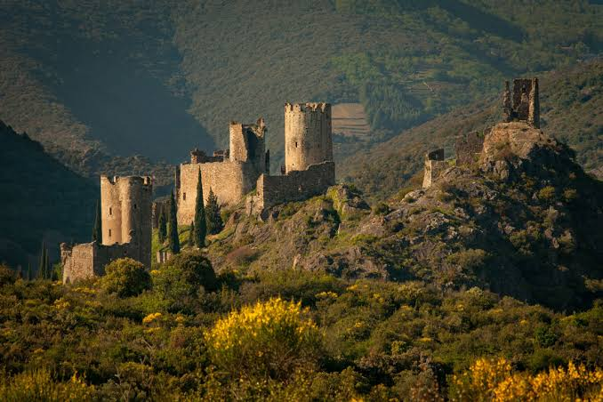

À 18 km au nord de Carcassonne, sur les premiers contreforts de la Montagne Noire, les quatre châteaux de Lastours occupent une arête rocheuse spectaculaire dominant les vallées de l'Orbiel et du Grésilhou. Le site ne se résume pas aux quatre silhouettes visibles aujourd'hui : il forme un vaste ensemble archéologique comprenant les fortifications de Cabaret, Surdespine, Quertinheux et Tour Régine, mais aussi les vestiges du castrum médiéval établi plus bas sur les pentes. Les fouilles ont révélé une fréquentation humaine très ancienne, remontant à plusieurs millénaires, bien avant l'installation de la société féodale.
Au Moyen Âge, le lieu est surtout connu sous le nom de Cabaret. À partir des XIe et XIIe siècles, il devient le centre d'une importante seigneurie du Cabardès. Sa position commande les voies qui relient la plaine de Carcassonne aux reliefs de la Montagne Noire et aux secteurs miniers de la vallée de l'Orbiel. L'exploitation ancienne des ressources métallifères, notamment du fer, contribue à la prospérité locale. Le paysage fortifié d'alors diffère toutefois de celui que nous voyons aujourd'hui : plusieurs noyaux seigneuriaux, habitats, ateliers et lieux de vie s'organisent autour du rocher de Cabaret.

Les quatre châteaux de Lastours, alignés sur leur arête rocheuse au-dessus de l'Orbiel
La famille de Cabaret compte parmi les lignages les plus puissants de la vicomté de Carcassonne. À la veille de la croisade contre les Albigeois, ses seigneurs entretiennent des liens étroits avec la noblesse méridionale et le catharisme est solidement implanté dans le castrum. Des croyants et des religieux cathares y trouvent accueil et protection. Cette présence explique que Cabaret devienne, après 1209, l'un des grands foyers de résistance à la conquête menée par Simon de Montfort au nom de la croisade.
Après la prise de Carcassonne en août 1209, Pierre-Roger de Cabaret refuse de se soumettre. La puissance naturelle du site et la fidélité de ses défenseurs rendent une attaque directe difficile. Cabaret joue alors un rôle majeur dans la guerre. Bouchard de Marly, chevalier croisé, est notamment capturé par les hommes de Cabaret et détenu dans la forteresse. Simon de Montfort tente de réduire la place, mais la résistance se prolonge tandis que les combats, sièges et retournements d'alliance bouleversent tout le Carcassès.
En 1211, dans un contexte militaire devenu défavorable, Pierre-Roger de Cabaret négocie finalement sa soumission. Cabaret n'en cesse pas pour autant d'être associé à la résistance méridionale. Après la mort de Simon de Montfort en 1218 et l'effondrement progressif d'une partie des conquêtes croisées, les anciens seigneurs retrouvent une marge d'action. Dans les décennies suivantes, la monarchie capétienne intervient de plus en plus directement en Languedoc. La croisade royale de Louis VIII en 1226, puis le traité de Paris-Meaux de 1229, accélèrent l'intégration politique de la région au domaine d'influence du roi de France.
La dernière grande secousse intervient en 1240, lorsque Raimond II Trencavel tente de reprendre Carcassonne et ses anciennes possessions. Après l'échec de cette révolte, l'autorité royale s'impose définitivement à Lastours. Le vieux castrum seigneurial est progressivement abandonné et son organisation défensive est profondément transformée. Les fortifications visibles aujourd'hui sont donc, pour une large part, le résultat de la reprise en main capétienne : elles ne sont pas simplement les « châteaux cathares » demeurés intacts depuis la croisade, mais des ouvrages reconstruits, adaptés ou réorganisés par le pouvoir royal.
La crête reçoit alors quatre forteresses distinctes. Cabaret, la plus importante, conserve le nom de l'ancienne seigneurie ; Surdespine et Quertinheux reprennent eux aussi des appellations médiévales ; Tour Régine, plus compacte et généralement considérée comme la plus récente des quatre, appartient pleinement au programme royal. Leur disposition permet de surveiller les vallées, les voies de circulation et un territoire nouvellement soumis. Lastours s'intègre ainsi au vaste système de fortifications royales organisé autour de Carcassonne face aux pouvoirs méridionaux puis, plus au sud, au royaume d'Aragon.
Un document de 1260 renseigne sur les garnisons entretenues par la monarchie. Cabaret dispose notamment d'un châtelain et d'hommes chargés du service de la place, tandis que les autres tours sont confiées à de petites garnisons permanentes. Ces effectifs réduits montrent la formidable efficacité défensive du relief : les murailles complètent un éperon naturellement abrupt, difficile à atteindre et facile à surveiller. Les citernes, enceintes, archères et tours témoignent de cette adaptation très étroite entre architecture militaire et topographie.
Après le traité de Corbeil de 1258, qui clarifie les rapports territoriaux entre la couronne de France et celle d'Aragon, les forteresses des Corbières et du Carcassès participent à la défense du nouveau cadre frontalier. Lastours se trouve plus en retrait que Peyrepertuse ou Quéribus, mais demeure une place de contrôle importante au nord de Carcassonne. Avec le déplacement de la frontière franco-espagnole vers les Pyrénées à la suite du traité des Pyrénées de 1659, sa fonction militaire perd progressivement de son importance.
L'intérêt historique de Lastours tient enfin à l'ampleur des recherches archéologiques menées sur le site. Les fouilles du castrum ont permis de restituer non seulement l'histoire militaire des châteaux, mais aussi la vie quotidienne d'une communauté médiévale : habitat, artisanat, circulation des objets, activités minières et transformations liées à la conquête royale. Le site offre ainsi une lecture particulièrement riche du passage d'un centre seigneurial occitan, marqué par le catharisme et la croisade, à un ensemble fortifié royal. C'est cette superposition de plusieurs millénaires d'occupation, et surtout de deux paysages médiévaux successifs, qui fait de Lastours un témoignage exceptionnel de l'histoire du Languedoc.
🥾
Visite pratique
⏱️
Durée
2h à une demi-journée
📊
Difficulté
Moyenne, sentier de crête
🚗
Accès
Lastours, à 20 min de Carcassonne
🎟️
Tarif
Billetterie sur place
✦ Infos pratiques
Belvédère Point de vue d'ensemble sur les quatre châteaux
Sentier aménagé Depuis l'usine textile jusqu'aux monuments
Village de Cabaret Vestiges de maisons, forges et ateliers médiévaux
Meilleure période Printemps et automne, lumière rasante sur la crête
Équipement Chaussures de marche, terrain rocheux
1
Le Belvédère
Premier point de vue offrant une vision d'ensemble spectaculaire sur les quatre châteaux alignés.
2
Village médiéval de Cabaret
Au pied de la crête, les vestiges du castrum : maisons, écuries, forges et rues pavées mis au jour par les fouilles.
3
Château de Cabaret
Le plus vaste des quatre, avec son donjon polygonal et sa vue sur les trois autres forteresses.
4
Tour Régine et Surdespine
Tours circulaires coiffées d'un dôme en spirale, bâties sur un plan alors peu répandu dans la région.
5
Château de Quertinheux
En léger retrait, ce poste avancé surveille le site jusqu'au village et domine la grotte du Trou de la Cité.
🏆
Reconnaissance & patrimoine
🏛️
Patrimoine mondial de l'UNESCO
Inscrit le 26 juillet 2026 au titre des « Forteresses royales capétiennes du Languedoc », un bien en série de huit sites.
⭐ UNESCO 2026
🏰
Monument historique
L'un des premiers sites classés monument historique du département, dès 1905.
Classé MH 1905
🪨
Site archéologique majeur
Près de 30 ans de fouilles ont mis au jour le castrum médiéval de Cabaret, au pied des tours.
Fouilles en cours
🌿
Nature & paysage
Les quatre châteaux s'étagent entre 260 et 285 mètres d'altitude sur une arête rocheuse de 600 mètres de long, isolée par les profondes vallées de l'Orbiel et du Grésillou, au cœur du Cabardès. Ce relief accidenté des premiers contreforts de la Montagne Noire a permis de bâtir quatre forteresses légères, sans qu'il soit nécessaire d'élever une enceinte unique de grande taille.
Cabaret, Tour Régine, Surdespine et Quertinheux : quatre sentinelles de montagne qui s'étagent sur les premiers contreforts de la Montagne Noire, dans un paysage où la roche calcaire et la forêt se confondent avec l'architecture militaire.
— Citadelles du vertige, Département de l'Aude
En contrebas, les gorges de l'Orbiel, autrefois exploitées pour leur minerai de fer et d'or, sont aujourd'hui bordées de sentiers de randonnée. La forêt de chênes verts et de pins qui recouvre les pentes abrite une faune discrète, tandis que les tours dominent toujours le village de Lastours et ses toits de tuiles.
📍
Aux alentours
Village de Lastours niché au confluent de l'Orbiel et du Grésillou, au pied des quatre châteaux.
Cité de Carcassonne à moins de 20 minutes, la célèbre cité médiévale et ses remparts, également inscrits à l'UNESCO.
Montagne Noire massif forestier voisin, propice à la randonnée et aux points de vue sur le Cabardès.
Mines de Salsigne ancien site minier voisin, longtemps l'un des plus grands gisements d'or d'Europe.